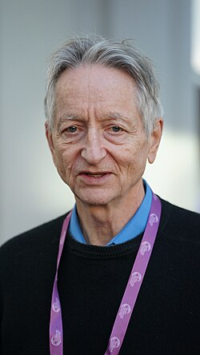
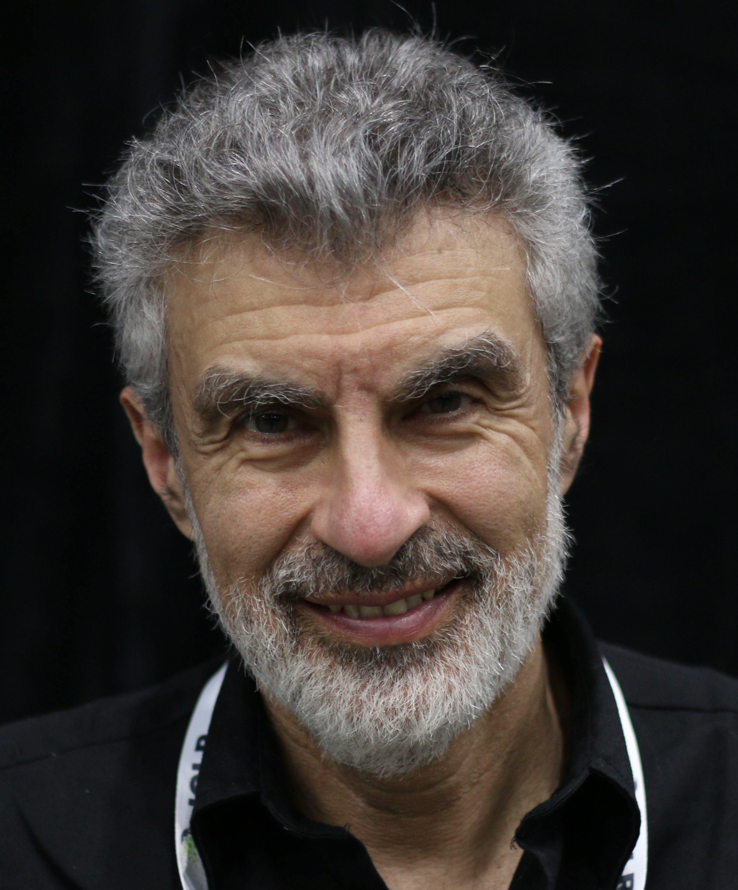
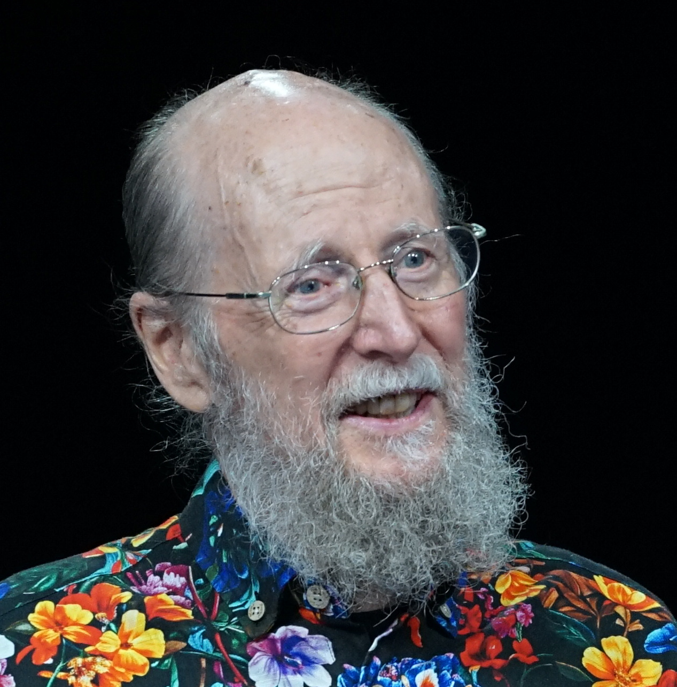

TORONTO · MONTRÉAL · EDMONTON
CHAPITRE 3
Les trois écoles canadiennes de l'IA
TROIS PÔLES CANADIENS

Toronto
UNIVERSITÉ DE TORONTO
RECONNAISSANCE INTERNATIONALE

Geoffrey Hinton

Yoshua Bengio
Yann LeCun
Prix Turing, 2018
Prix Nobel de physique, 2024
MONTRÉAL
Yoshua Bengiofondateur, Mila
MILA — DEPUIS 1993
Mila - Quebec Artificial Intelligence Institute
1300+
chercheurs, professeurs, étudiants et partenaires
Source : Mila
MONTRÉAL, PÔLE MONDIAL
Recherche fondamentale
Sécurité et droits de la personne
EDMONTON
Richard Suttonapprentissage par renforcement
L'IA agit dans un environnement
Elle observe et ajuste sa stratégie
Elle s'améliore avec l'expérience
Prix Turing, 2024

Richard Sutton
Andrew Barto
Toronto — Reconnaître
Montréal — Représenter
Edmonton — Agir et s'améliorer
INFLUENCE DISPROPORTIONNÉE
Pourquoi les gagnants économiques sont-ils ailleurs?